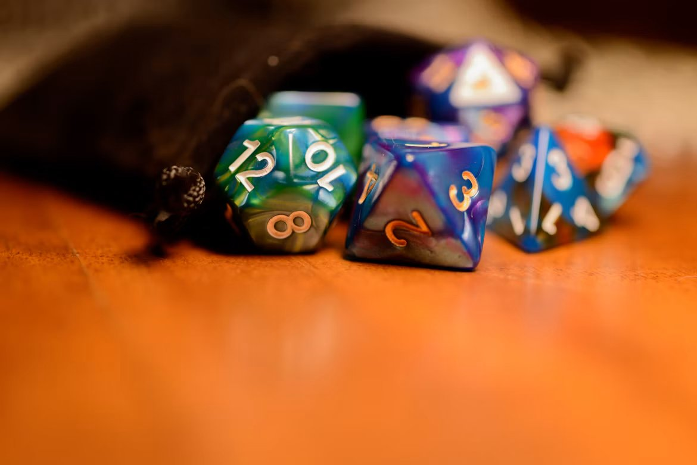

Mesas de RPG
Campanhas semanais com mestres experientes. Fichas prontas para quem está começando.
Clube de jogos desde 2026
A Taverna de Dados é um clube de jogos de tabuleiro e RPG que reúne estudantes e moradores de Sete Lagoas para jogar, aprender regras novas e criar histórias em grupo.
Não precisa saber jogar nem ter jogos em casa: nossos mestres e monitores explicam tudo na primeira partida.

Campanhas semanais com mestres experientes. Fichas prontas para quem está começando.
Mais de 40 jogos de tabuleiro no acervo para levar para casa por até 7 dias.
Aprenda a criar seu próprio jogo: regras, cartas, tabuleiro e testes com o grupo.